sqoop的操作
2025-09-26
sqoop的导入
创建数据库（无主键，一个map）
进入MySQL的test数据库
mysql -uroot -proot
show databases;
use test;
show tables;
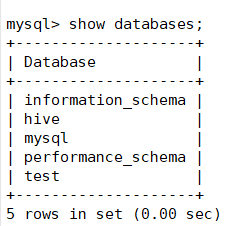
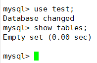
创建表
create table nba(id int(4),name varchar(20),num int(4),team varchar(20));
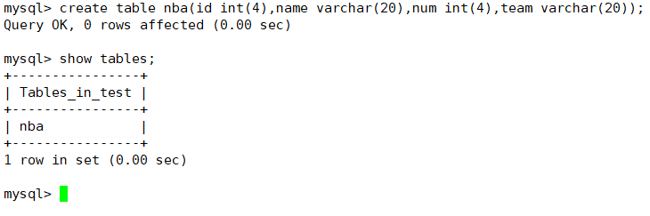
插入数据
insert into nba values(1,"科比",42,"湖人"),(2,"詹姆斯",37,"湖人"),(3,"库里",32,"勇士"),(4,"哈登",32,"火箭");
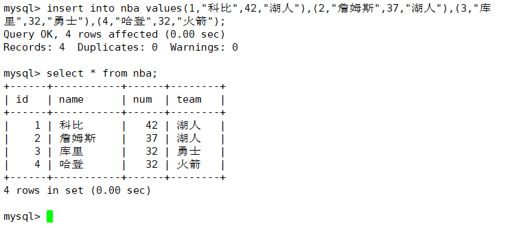
使用sqoop导入hdf（无主键，一个map）
到/opt/apps/sqoop-1.4.7.bin__hadoop-2.6.0/bin目录下
cd /opt/apps/sqoop-1.4.7.bin__hadoop-2.6.0/bin
执行导入
因为nba表中无主键 m不能>1
./sqoop import \
> --connect jdbc:mysql://LG04:3306/test \
> --username root \
> --password root \
> --table nba \
> --target-dir /data/to_hdfs \
> --m 1
./sqoop import --connect jdbc:mysql://LG04:3306/test --username root --password root --table nba --target-dir /data/to_hdfs --m 1
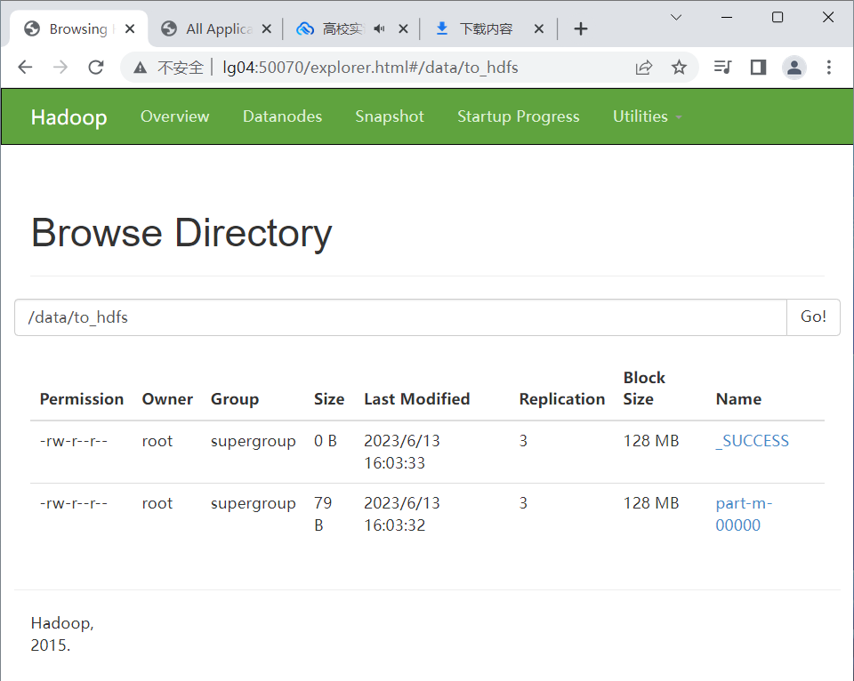
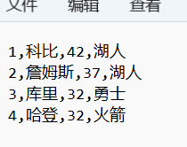
创建数据库（有主键，多个map）
创建表
create table nba_key(id int(4) primary key,name varchar(20),num int(4),team varchar(20));
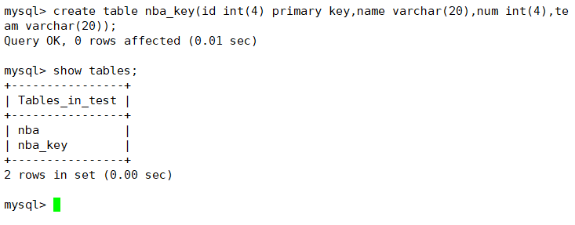
插入数据
insert into nba_key values(1,"科比",42,"湖人"),(2,"詹姆斯",37,"湖人"),(3,"库里",32,"勇士"),(4,"哈登",32,"火箭");
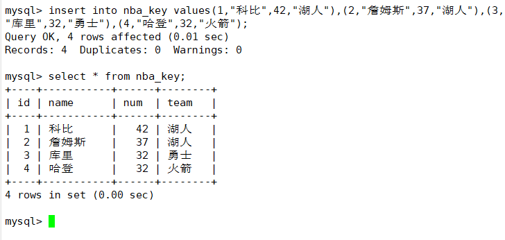
使用sqoop导入hdf（有主键，多个map）
到/opt/apps/sqoop-1.4.7.bin__hadoop-2.6.0/bin目录下
cd /opt/apps/sqoop-1.4.7.bin__hadoop-2.6.0/bin
执行导入
map可以为多个,结果会有多个part文件拆分数据
./sqoop import \
> --connect jdbc:mysql://LG04:3306/test \
> --username root \
> --password root \
> --table nba_key \
> --target-dir /data/to_hdfs_nba_key \
> --m 4
./sqoop import --connect jdbc:mysql://LG04:3306/test --username root --password root --table nba_key --target-dir /data/to_hdfs_nba_key --m 4
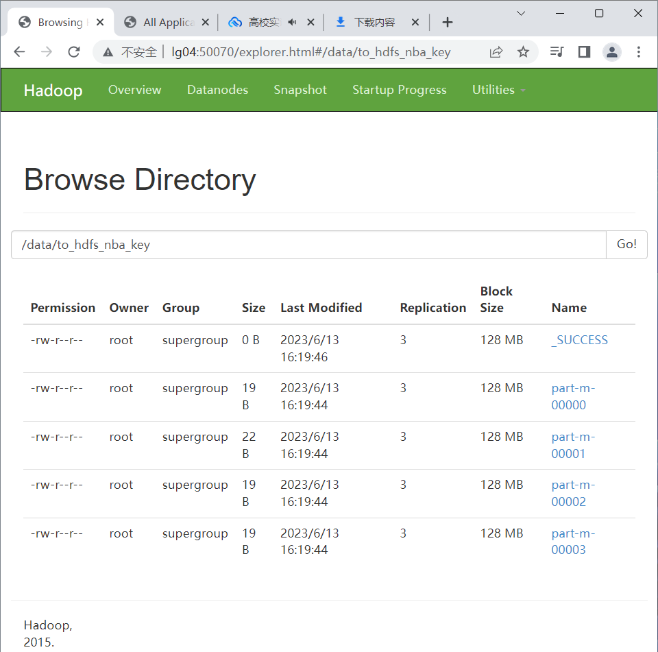

sqoop的导出
建一张空表
用于接收导出的数据
create table nba_result(id int(4) primary key,name varchar(20),num int(4),team varchar(20));
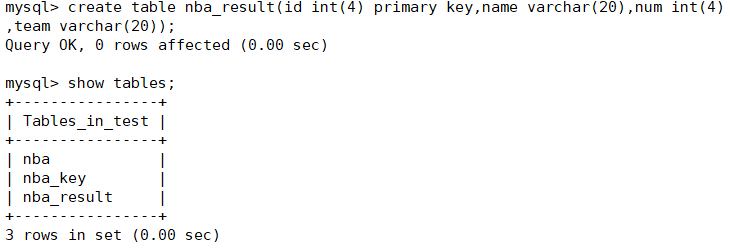
进入/opt/apps/sqoop-1.4.7.bin__hadoop-2.6.0/bin目录下
cd /opt/apps/sqoop-1.4.7.bin__hadoop-2.6.0/bin
执行导出
没有必要指定m，有几个文件，就指定几个map
./sqoop export \
> --connect jdbc:mysql://LG04:3306/test \
> --username root \
> --password root \
> --table nba_result \
> --export-dir /data/to_hdfs_nba_key \
> --fields-terminated-by ',' \
> --lines-terminated-by '\n'
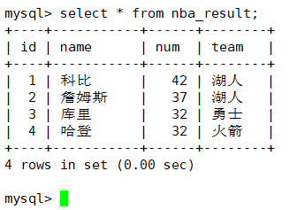
增量导入
必须要在有主键中的表中实现
在nba_key表中再添加4条数据
insert into nba_key values(5,"杜兰特",31,"篮网"),(6,"欧文",30,"独行侠"),(7,"东七七",26,"独行侠"),(8,"易建联",36,"宏远");
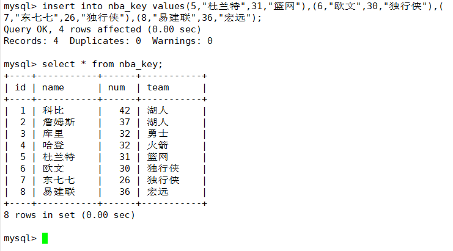
进入/opt/apps/sqoop-1.4.7.bin__hadoop-2.6.0/bin目录下
cd /opt/apps/sqoop-1.4.7.bin__hadoop-2.6.0/bin
执行导入
./sqoop import \
> --connect jdbc:mysql://LG04:3306/test \
> --username root \
> --password root \
> --table nba_key \
> --target-dir /data/to_hdfs_nba_key \
> --check-column id \
> --incremental append \
> --last-value 4
./sqoop import --connect jdbc:mysql://LG04:3306/test --username root --password root --table nba_key --target-dir /data/to_hdfs_nba_key --check-column id --incremental append --last-value 4
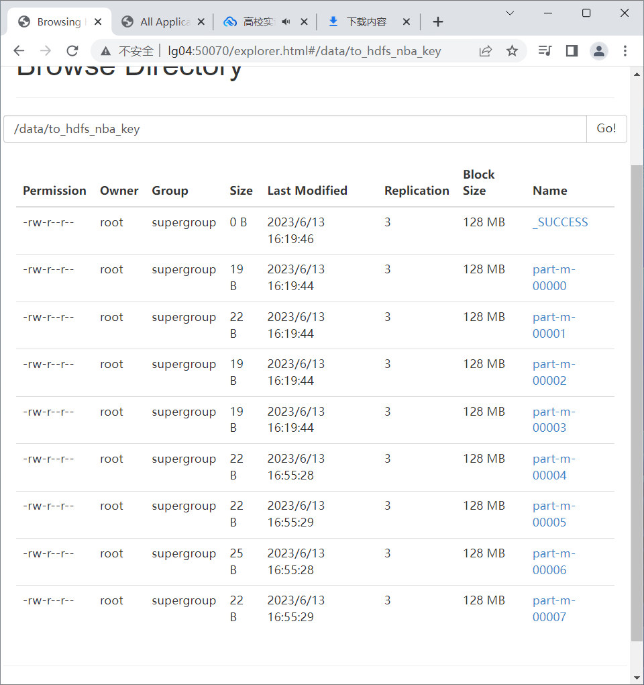
增量导出
将增量增加的文件导出给mysql
进入/opt/apps/sqoop-1.4.7.bin__hadoop-2.6.0/bin目录下
cd /opt/apps/sqoop-1.4.7.bin__hadoop-2.6.0/bin
执行导出
将part-m-00004导入nba_result表
./sqoop export --connect jdbc:mysql://LG04:3306/test --username root --password root --table nba_result --export-dir /data/to_hdfs_nba_key/part-m-00004 --fields-terminated-by ',' --lines-terminated-by '\n'
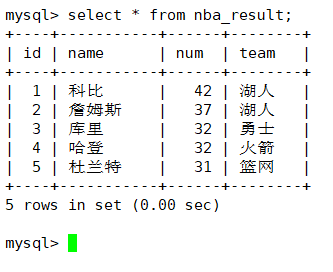